Peralatan Simulasi MELSOFT Gemini

Dilengkapi dengan fungsi yang melimpah dan dapat digunakan dalam berbagai aplikasi.
Fitur
Konfigurasi Tata Letak
Pengoperasian intuitif untuk tata letak yang cepat dan mudah. Memungkinkan penyesuaian parameter terperinci (dimensi, kecepatan, warna, dll.).
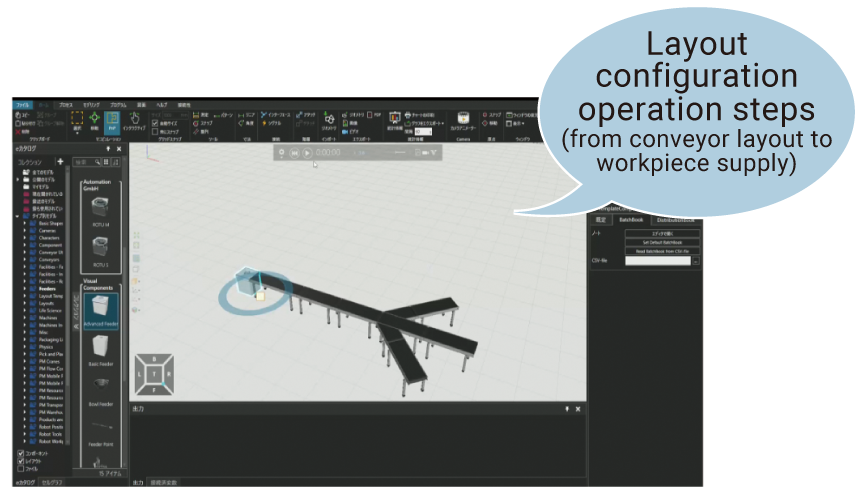eCatalog
Konten standar terdiri dari sekitar 3.000 komponen yang dapat diatur dengan operasi tetikus. Komponen yang dapat digunakan dalam eCatalog
Komponen utama dan jumlahnya
| Parts | Quantity |
|---|---|
| Robot* | 1773 |
| Robot tools | 91 |
| Conveyors | 58 |
| Processing machines | 34 |
| Machine accessories (loaders/unloaders) | 16 |
| Feeders | 20 |
| AGV/AMR | 45 |
| Facilities (desks, fences, racks, etc.) | 122 |
| Layout samples | 54 |
*Produsen utama: Mitsubishi Electric, FANUC, YASKAWA, KAWASAKI Robotics, KUKA, ABB, dll.
Impor CAD
Fungsi standar untuk mengimpor file CAD dari vendor CAD utama (Autodesk®, Dassault Systémes, PTC®).
*Silakan lihat spesifikasi untuk versi yang didukung dan detail lainnya.
Jenis file yang dapat diimpor
Format Manufaktur 3D Studio 3D ACIS File Awan Titik ASCII Autodesk FBX Autodesk Inventor Autodesk Naviswork Autodesk RealDWG Berkas awan titik biner CATIA V4 CATIA V5 CATIA V6 COLLADA Creo Format Transmisi GL I-deas IFC2x IGES lgrip/Quest/VNC JT Parasolid PRC Revit Robface Rhino Solid Edge SolidWorks STEP Litografi Stereo (ASCII dan Biner) U3D Unigraphics (perangkat lunak Siemens PLM NX) VDA-FS VRML WavefrontImpor Gambar 2D
Desain tata letak yang rumit dapat dilakukan dengan mengatur komponen pada denah lantai yang diimpor dan gambar 2D lainnya.
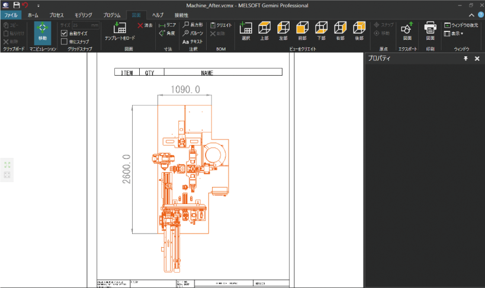Impor Data Awan Titik
Tata letak fasilitas saat ini diimpor sebagai data awan titik untuk memungkinkan verifikasi perubahan tata letak, dll.
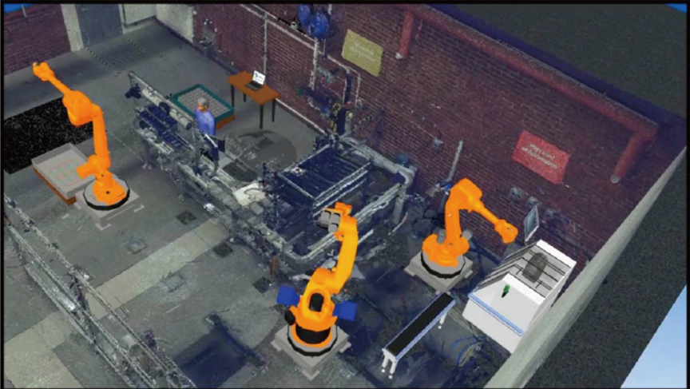Statistik
Menampilkan hasil statistik simulasi dalam berbagai bagan dan menganalisis untuk mengonfirmasi hambatan dan perubahan dalam informasi operasional. Data dapat diekspor sebagai file PDF atau Excel®.
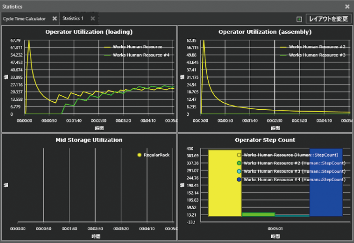Pengajaran Robot
Alat pengajaran robot yang sederhana dan mudah digunakan memudahkan untuk mendefinisikan operasi robot.
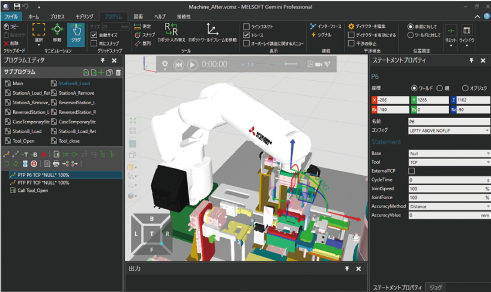Ekspor Program MELFA-BASIC
Dapat secara otomatis membuat program MELFA-BASIC untuk robot Mitsubishi Electric yang telah dilengkapi dengan model 3D.
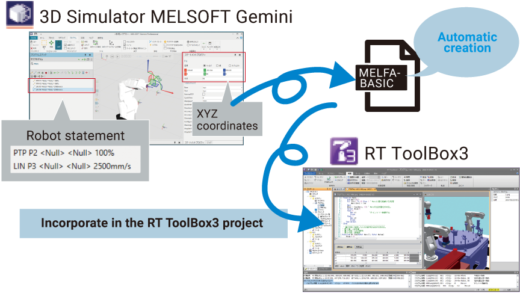Pembuatan Konten Penjualan
(video, animasi, pdf 3D)
Data dapat diekspor dalam berbagai format termasuk gambar diam, pdf 3D, dan gambar 2D untuk digunakan sebagai dokumen teknis dan materi presentasi. Dapat juga direproduksi sebagai video menggunakan perangkat lunak penampil gratis.
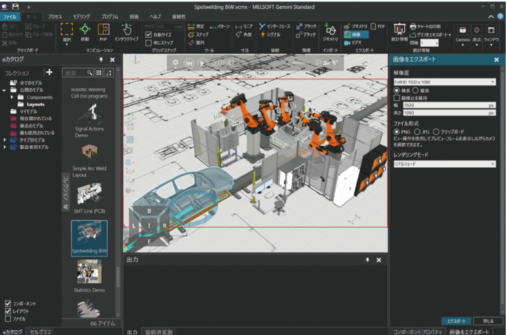Pengalaman Animasi VC
(penampil/aplikasi gratis)
Simulasi dapat dibagikan dan dialami dalam VR (realitas virtual) atau melalui telepon pintar.
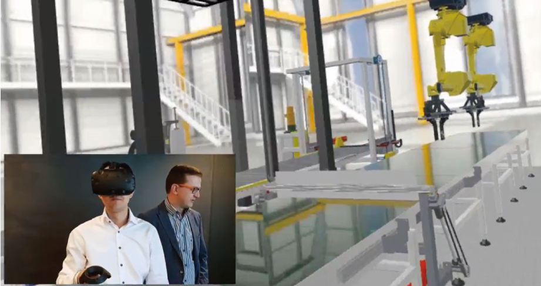Pemodelan Proses
Buat alur kerja proses manufaktur dengan operasi intuitif. Alur komponen dapat diatur dengan pemrograman minimal.
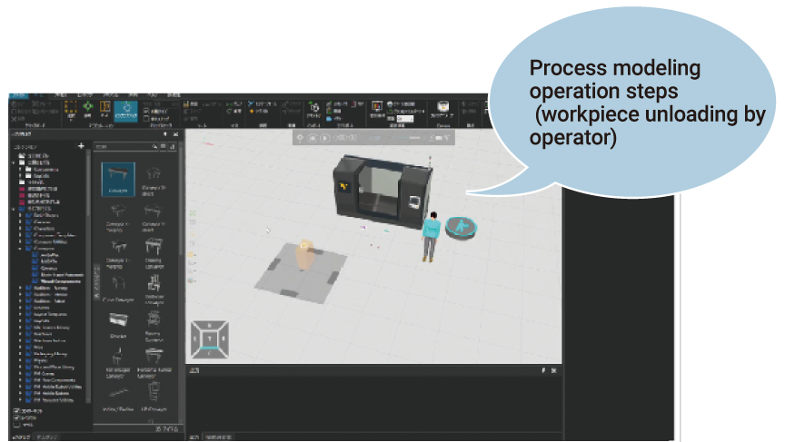Konektivitas PLC
Model 3D dapat langsung dihubungkan ke PLC Mitsubishi Electric dan bahkan dihubungkan ke PLC perusahaan lain melalui Server OPC.
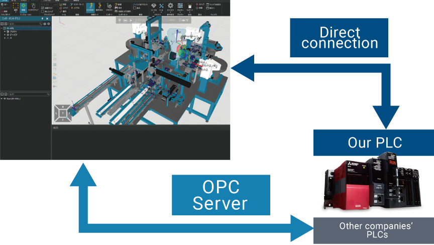Pasangan Variabel Konektivitas Impor/Ekspor CSV
Setelah mengekspor variabel model 3D dan tautannya dalam memori perangkat produk Mitsubishi yang terhubung (pasangan variabel) ke file CSV, seluruh file yang diedit di Excel®, dll. dapat diimpor.
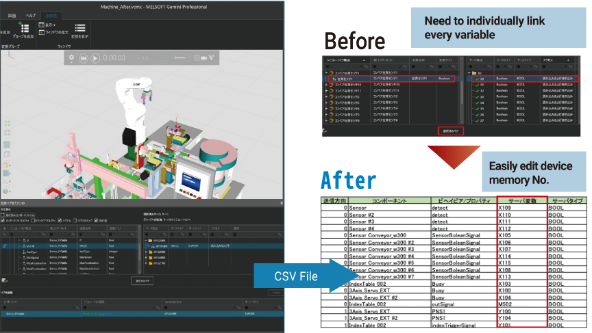Pemodelan Komponen
Data 3DCAD yang diimpor dapat dioperasikan di Simulator setelah menambahkan mekanisme dan mengatur operasi.
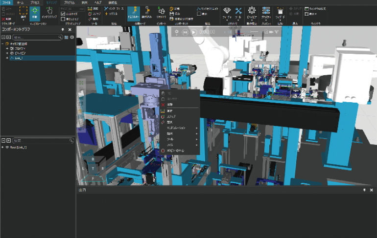Wizard untuk Pemodelan Komponen
Penyiapan wizard yang mudah untuk pengoperasian tangan robot, konveyor, dll.
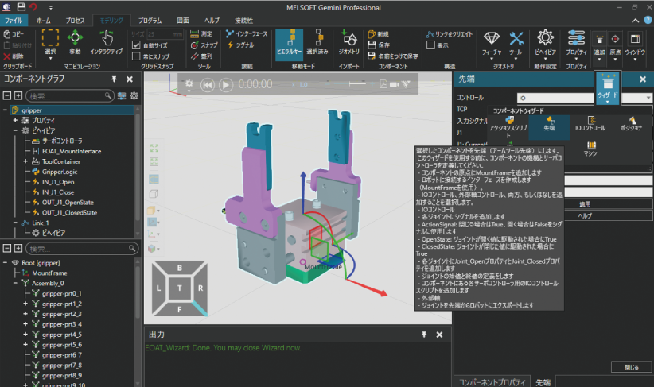Wizard untuk Pengaturan Mekanisme
Wizard memungkinkan pengaturan properti, tautan, dan skrip Python yang diperlukan untuk pengaturan mekanisme dengan mudah.
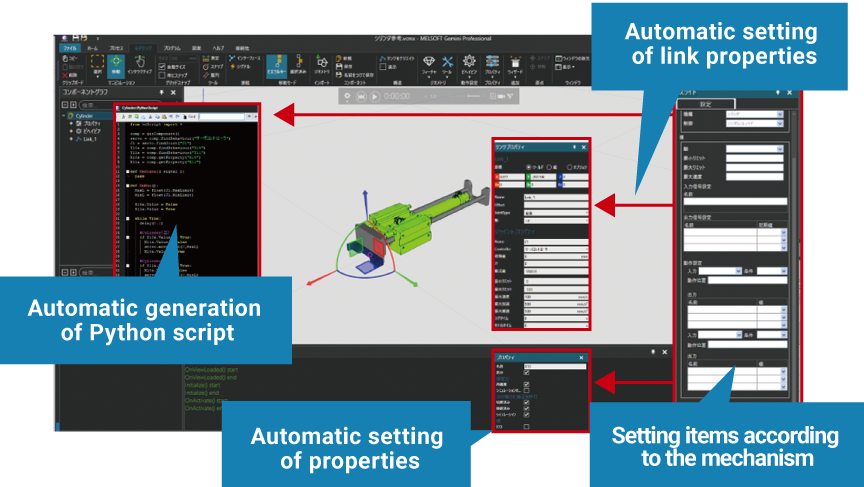Geometri Padat Dasar
Alat-alat geometri padat dasar memungkinkan pembuatan model 3D dan modifikasi data CAD yang diimpor dengan mudah.
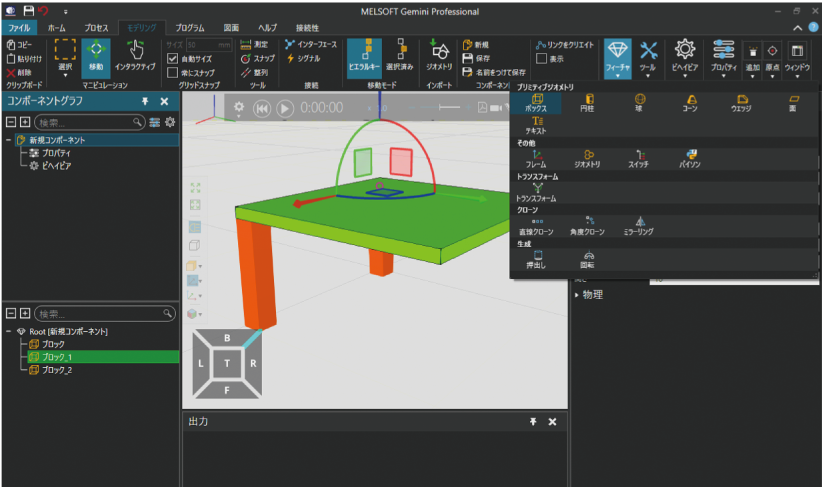Penyederhanaan Geometri
Mengurangi ukuran berkas dengan menyederhanakan model untuk memungkinkan operasi simulasi cahaya.
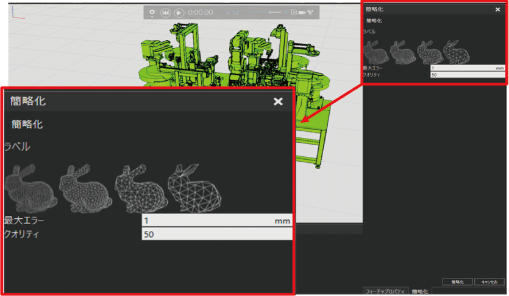Simulasi Fisika
Perilaku benda kerja dihasilkan lebih realistis dengan pengaturan fisik yang disederhanakan untuk kontak, gesekan, tolakan, dll.
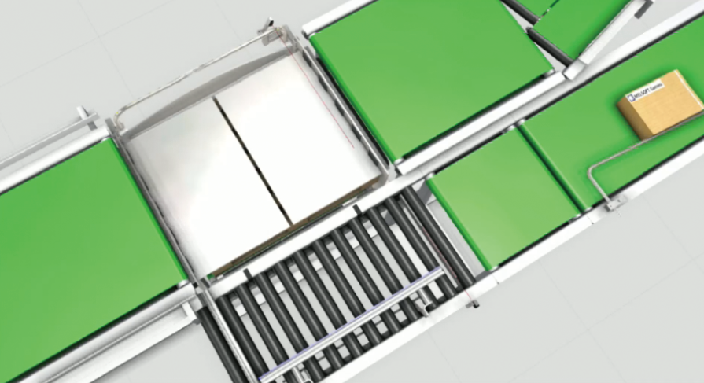Konektivitas Robot/PLC Canggih
Debugging dan verifikasi program kontrol dapat dilakukan dengan menghubungkan model 3D ke pengendali robot aktual*1, PLC*2, dan simulator
*1: KUKA, ABB, FANUC, UR, Stäubli, Doosan
*2: Siemens